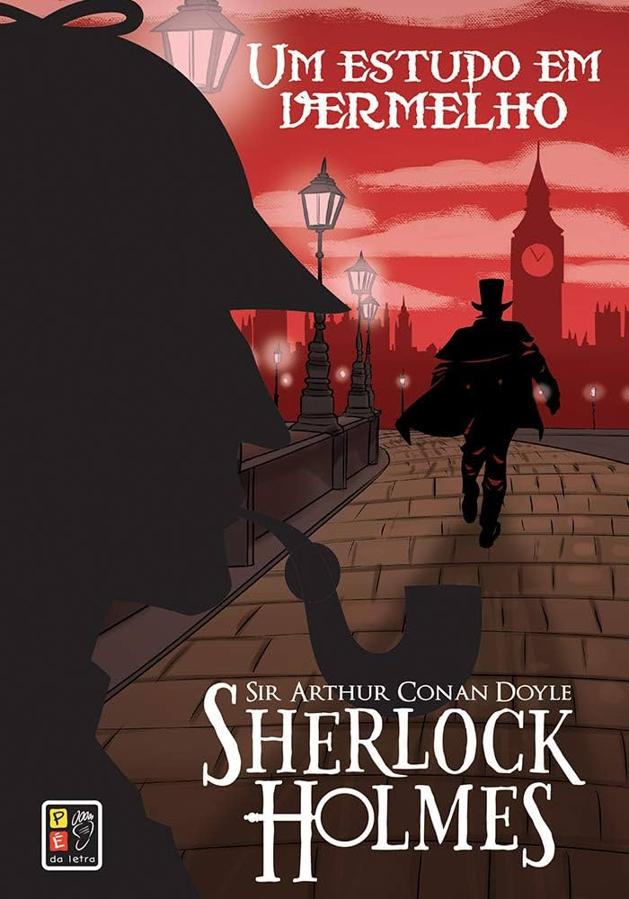

Sherlock Holmes
Sinopse
A trama acompanha o Dr. John Watson, um médico militar que retorna a Londres
debilitado e sem rumo após servir na Guerra do Afeganistão. Precisando dividir
as despesas de um aluguel, ele é apresentado ao excêntrico Sherlock Holmes. Os
dois passam a morar no icônico endereço 221B Baker Street, onde Watson começa a
se intrigar com a misteriosa rotina e a impressionante capacidade de observação
de seu novo colega.
A rotina da dupla muda drasticamente quando Holmes é chamado pelos inspetores da
Scotland Yard para desvendar um crime intrigante. Em uma casa abandonada em Londres,
um homem americano é encontrado morto. O corpo não apresenta nenhum ferimento, mas o
ambiente está repleto de manchas de sangue e a palavra "RACHE" (vingança, em alemão)
está escrita na parede com sangue.
Para solucionar o mistério, Holmes aplica pela primeira vez o seu famoso método de dedução
científica. O caso revela uma teia complexa de segredos que cruza o oceano, ligando o crime
em Londres a uma trágica história de amor, perseguição e fanatismo religioso ocorrida anos
antes nos desertos de Utah, nos Estados Unidos.